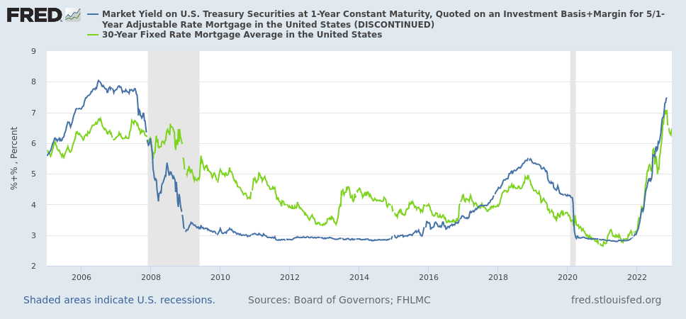
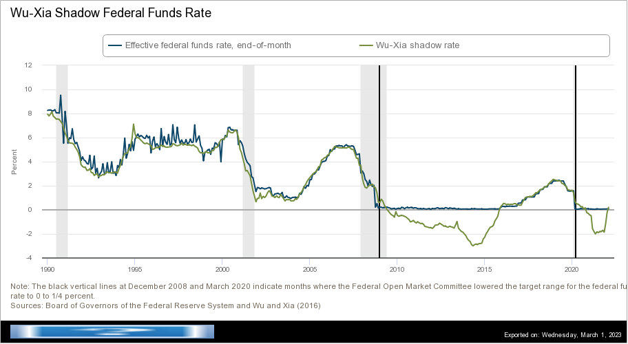

 Blue: Adjustable-rate mortgage rate. Green: Fixed-rate mortgage rate. The adjustable-rate mortgages cannot go below 2.75% because the index is hitting the zero-lower bound. The fixed-rate mortgage does go below 2.75%, in late 2020 and early 2021.
This can occur because of how the interest rate for ARMs is calculated. For the unfamiliar, the interest rate of an ARM comes from adding an "index" and a "margin". The index is a nominal short-term interest rate, like SOFR or a US Treasury rate. It goes up and down and "adjusts" the adjustable-rate mortgage. The margin is a fixed number. The margin is added to the index because average people are more risky borrowers than banks or the government.
If you need an example, a common index is the 1-year constant-maturity Treasury (1Y CMT) and a common margin is 2.75%. The 1Y CMT is currently at 5.07%, so a borrower with an adjustable-rate mortgage is paying 5.07% + 2.75% = 7.82%.
This is a bad way to calculate the interest because the index has a problem: the zero lower-bound (ZLB). Nominal interest rates can (almost) never go negative. If they did, people would receive less money in the future than they loaned out. People with money would rather hold on to their cash and get, effectively, 0% interest. Thus, nominal short-term interest rates will never go below zero. There's a zero lower-bound.
So, even if fixed-rate mortgages go below 2.75%, adjustable-rate mortgages cannot, because the index can never go below zero and the margin, usually 2.75%, gets added to the index.
How much did this cost borrowers? For that, we'd have to know how low the index would go if there wasn't the zero lower bound. Interest rates without the zero lower bound are known as "shadow rates". They were invented by the famous Fischer Black in my favorite Finance paper.
We cannot directly measure shadow rates, but economists use mathematical models to estimate them. A model by Cynthia Wu and Fan Dora Xia, hosted at the Federal Reserve Bank of Atlanta, shows that the shadow rate was negative after the Financial Crisis and during the COVID Pandemic. It has been negative for most of the time between 2009 and 2022.
 The FedFunds interest rate and Wu-Xia's estimate of the shadow rate. The non-shadow rate hits the zero lower-bound during the Financial Crisis and during the COVID Pandemic. The shadow rate is able to go negative and does then.
To estimate how much money was taken from borrowers, I used the following numbers. Lately, ARMs have been about 10% of new mortgages (measured by dollars loaned). I assumed that's the rate for all mortgages. The size of the mortgage market is $11.92 trillion in loans in 2023. I assumed that is the amount currently borrowed (not the value originally borrowed) and it has been steady at that value. I assumed 1/6th of the adjustable-rate mortgage was spent at a fixed introductory rate. Wu and Xia's model computed the shadow rate for Fed Funds, not the 1Y CMT. I estimated the 1Y CMT by adding 0.20%, which was the average between the Fed Funds rate and 1Y CMT from Jan 2016 to Dec 2019 (when it was far from the zero lower bound).
Using those numbers, I estimate that over the last 13 years, the amount "transferred" was $88 billion. I don't have a good per-mortgage estimate. But the average interest rate would have been 2.63% instead of 3.44%, so interest payments would have been 24% lower.
$88 billion is a lot of money. And these borrowers tend to be "lower income, less wealthy, less credit worthy, and single-headed households". And some economists think that interest rates will commonly hit the zero lower-bound in the future.
We need to fix this.